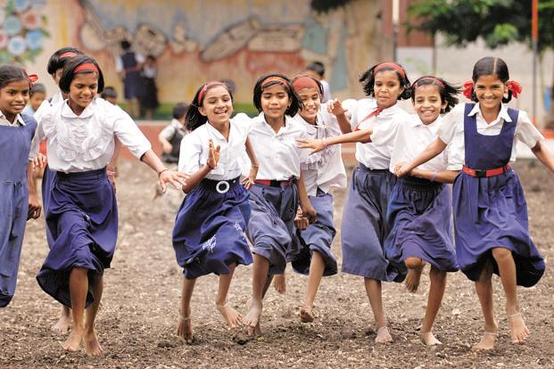

Our story
Blossom Trust was established in 1993 as a grassroots NGO with an initial focus on social empowerment of underprivileged women and security for vulnerable children living in Virudhunagar. We have since grown into a rights based, women-led organisation for the empowerment of women & development of communities across Tamil Nadu .
Over time, our work broadened as we listened and respond to community needs. Blossom Trust oversees a range of programmes, from health advocacy for those living with HIV/AIDs, to micro-finance and capacity-building. In all that we do, we put women at the forefront, remaining true to our original objectives.
